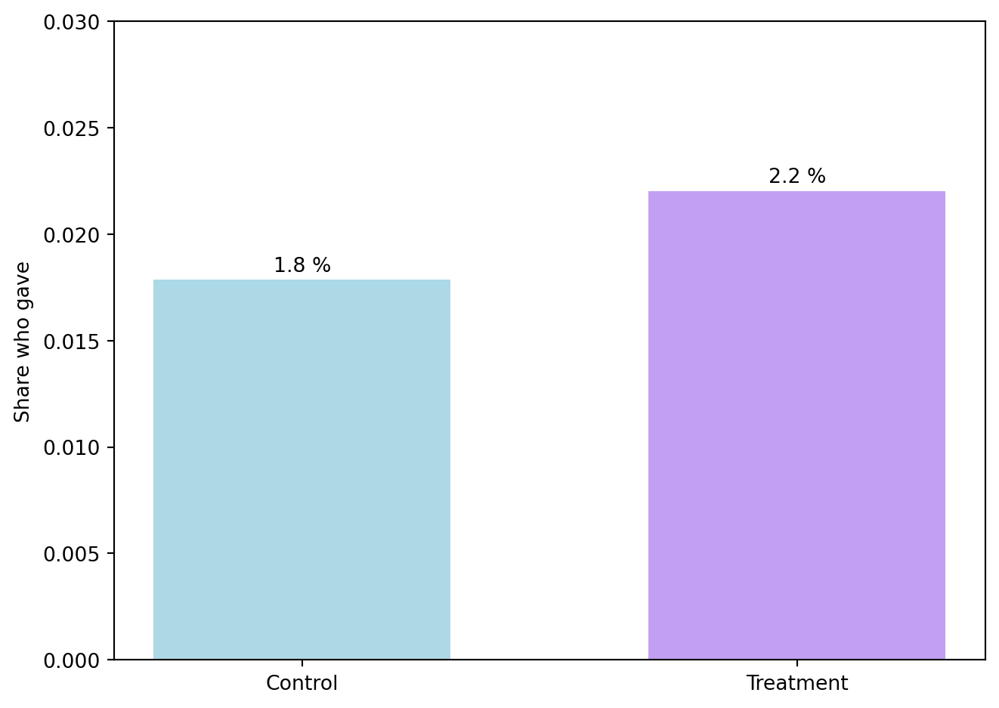
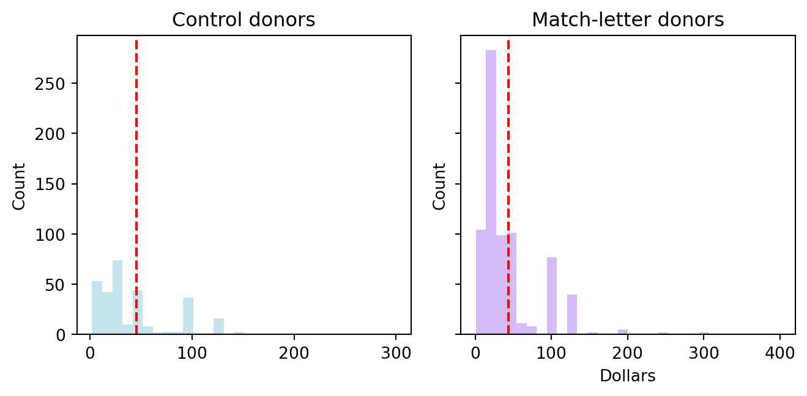
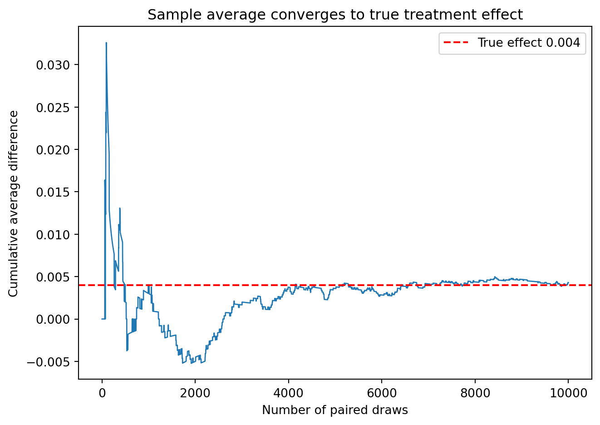
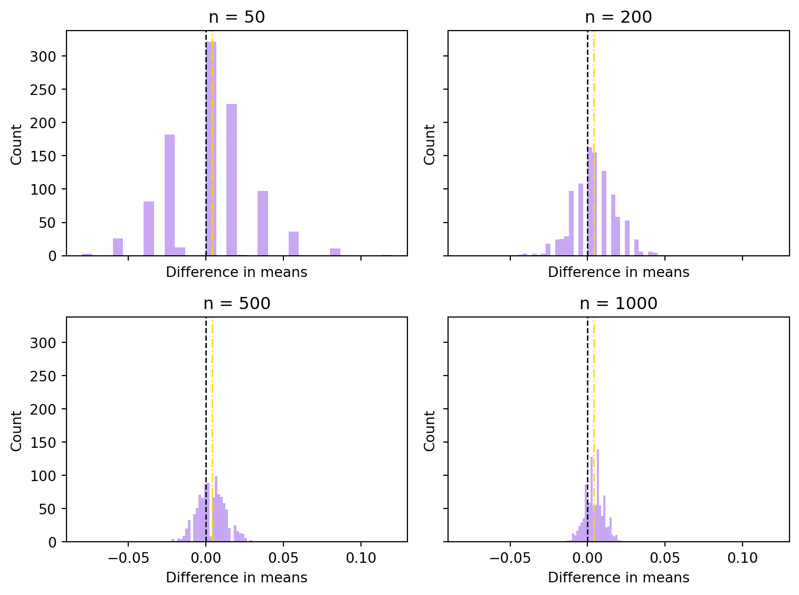

Code
import pandas as pd
df = pd.read_stata("/Users/yoonjeong_park/mysite/_data/karlan_list_2007.dta")
print(f"{df.shape[0]:,} observations × {df.shape[1]} variables loaded.")50,083 observations × 51 variables loaded.Yoonjeong Park
May 2, 2025
Dean Karlan at Yale and John List at the University of Chicago conducted a large‑scale field experiment to see whether lowering the price of giving—by announcing a matching grant—boosts charitable donations. In August 2005 they mailed over 50,000 letters to prior supporters of a U.S. civil‑liberties nonprofit and randomly split the sample into a control group and a treatment group.
Within the match arm, the researchers orthogonally randomized three design features:
| Factor | Levels |
|---|---|
| Match ratio | 1:1, 2:1, 3:1 |
| Maximum pledge | $25 k, $50 k, $100 k, or unstated |
| Example ask amount | donor’s highest previous gift, 1.25 × that gift, 1.50 × that gift |
This yielded (3 = 36) distinct match treatments, all printed on otherwise identical stationery.
The two primary outcomes were (i) response rate — whether a donor gave within one month—and (ii) dollars contributed. Karlan & List find that any match increases the likelihood of giving by roughly 22 % and the revenue per letter by 19 %, yet higher match ratios (2:1 and 3:1) do not outperform the simple 1:1 offer. :contentReferenceoaicite:0:contentReferenceoaicite:1
This project seeks to replicate their results.
This replication file contains 50,083 observations and 51 variables, with each row representing a single letter mailed in August 2005. Each record details the recipient’s random assignment, either a control appeal or one of 36 match treatments along with a rich set of pre‑treatment donor attributes. Two key outcomes are measured one month post‑mailing, whether a gift was made and the amount contributed, with no missing values in treatment or outcome fields. Overall missingness among covariates is below 5%, making the dataset effectively analysis ready from the start.
50,083 observations × 51 variables loaded.| Variable | Description |
|---|---|
treatment |
Treatment |
control |
Control |
ratio |
Match ratio |
ratio2 |
2:1 match ratio |
ratio3 |
3:1 match ratio |
size |
Match threshold |
size25 |
$25,000 match threshold |
size50 |
$50,000 match threshold |
size100 |
$100,000 match threshold |
sizeno |
Unstated match threshold |
ask |
Suggested donation amount |
askd1 |
Suggested donation was highest previous contribution |
askd2 |
Suggested donation was 1.25 x highest previous contribution |
askd3 |
Suggested donation was 1.50 x highest previous contribution |
ask1 |
Highest previous contribution (for suggestion) |
ask2 |
1.25 x highest previous contribution (for suggestion) |
ask3 |
1.50 x highest previous contribution (for suggestion) |
amount |
Dollars given |
gave |
Gave anything |
amountchange |
Change in amount given |
hpa |
Highest previous contribution |
ltmedmra |
Small prior donor: last gift was less than median $35 |
freq |
Number of prior donations |
years |
Number of years since initial donation |
year5 |
At least 5 years since initial donation |
mrm2 |
Number of months since last donation |
dormant |
Already donated in 2005 |
female |
Female |
couple |
Couple |
state50one |
State tag: 1 for one observation of each of 50 states; 0 otherwise |
nonlit |
Nonlitigation |
cases |
Court cases from state in 2004-5 in which organization was involved |
statecnt |
Percent of sample from state |
stateresponse |
Proportion of sample from the state who gave |
stateresponset |
Proportion of treated sample from the state who gave |
stateresponsec |
Proportion of control sample from the state who gave |
stateresponsetminc |
stateresponset - stateresponsec |
perbush |
State vote share for Bush |
close25 |
State vote share for Bush between 47.5% and 52.5% |
red0 |
Red state |
blue0 |
Blue state |
redcty |
Red county |
bluecty |
Blue county |
pwhite |
Proportion white within zip code |
pblack |
Proportion black within zip code |
page18_39 |
Proportion age 18-39 within zip code |
ave_hh_sz |
Average household size within zip code |
median_hhincome |
Median household income within zip code |
powner |
Proportion house owner within zip code |
psch_atlstba |
Proportion who finished college within zip code |
pop_propurban |
Proportion of population urban within zip code |
To confirm the randomization worked properly, I compared key baseline characteristics between the treatment and control groups. Because these metrics were recorded before any letters were sent, any clear differences would suggest an issue in how participants were randomly assigned.
Baseline variables examined
- hpa – Highest previous contribution (signals donor capacity)
- mrm2 – Months since last donation (gauges recency)
- freq – Number of prior gifts (tracks engagement)
- female – Gender indicator (checks demographic balance)
I ran two-sample t tests to see if the treatment and control group means differed. Formally, the t statistic measures how far apart the two group averages are, relative to the variability within each group:
[ t = ]
where (X_T) and (X_C) are the group means, (S_T^2) and (S_C^2) the sample variances, and (N_T), (N_C) the group sizes.
import numpy as np
T, C = df[df.treatment==1], df[df.treatment==0]
def t_row(x, y):
n1,n2 = len(x),len(y)
m1,m2 = x.mean(),y.mean()
se = np.sqrt(x.var(ddof=1)/n1 + y.var(ddof=1)/n2)
t = (m1-m2)/se
return m1, m2, m1-m2, t
rows = [t_row(T[v], C[v]) for v in ["hpa","mrm2","freq","female"]]
ttest = pd.DataFrame(
rows,
columns=["Mean T","Mean C","Diff","t-stat"],
index=["hpa","mrm2","freq","female"]
).round(2)
ttest| Mean T | Mean C | Diff | t-stat | |
|---|---|---|---|---|
| hpa | 59.60 | 58.96 | 0.64 | 0.97 |
| mrm2 | 13.01 | 13.00 | 0.01 | 0.12 |
| freq | 8.04 | 8.05 | -0.01 | -0.11 |
| female | 0.28 | 0.28 | -0.01 | -1.77 |
None of the four |t| values surpassed the usual 1.96 cutoff for a 5% significance level. In fact:
hpa differs by only $0.64 on a $60 baseline—roughly a 1% gap, t = 0.97.mrm2 and freq are nearly identical (|t| < 0.15).female shows the biggest difference, but |–1.77| is still below 1.96, so at an 8% significance level it’s borderline at best, and any apparent effect fades when adjusting for multiple comparisons.In practical terms, treatment and control groups are alike in giving capacity, donation recency, engagement history, and gender composition. This aligns with Table 1 of Karlan & List (2007), confirming the randomization worked as intended. Since the baseline is balanced, any differences in donation behavior later on can be viewed as causal impacts of the match offer, rather than quirks of how participants were assigned.
Next I replicate the same check with simple linear regression, which yields identical t statistics and reinforces this conclusion.
import statsmodels.formula.api as smf
def ols_coef(v):
m = smf.ols(f"{v} ~ treatment", data=df).fit()
return m.params["treatment"], m.tvalues["treatment"]
ols = pd.DataFrame(
[ols_coef(v) for v in ["hpa","mrm2","freq","female"]],
columns=["Coef","t-stat"], index=["hpa","mrm2","freq","female"]).round(2)
ols| Coef | t-stat | |
|---|---|---|
| hpa | 0.64 | 0.94 |
| mrm2 | 0.01 | 0.12 |
| freq | -0.01 | -0.11 |
| female | -0.01 | -1.76 |
The manual two-sample t tests and our quick OLS regressions yield nearly identical t-statistics for each baseline variable (see the tables above). This aligns perfectly with theory: with a single 0/1 predictor, OLS replicates the standard two-sample t test.
Since all |t| values remain well under the 1.96 threshold, we fail to reject the null hypothesis of equal means for hpa (giving capacity), mrm2 (donation recency), freq (engagement frequency), and female (gender). In simpler terms, the treatment and control groups start off the same.
This balance check validates the random assignment. It indicates that any differences observed later in donation behavior can be attributed to the matching-grant offer, rather than artifacts of who ended up in each group.
The first outcome measures whether each recipient donated at all. If matching grants effectively reduce the “price” of giving, the treatment group should naturally include more donors than the control group.
We begin by examining the share of recipients in each group who made a contribution, to see whether mentioning the matching grant drove more individuals to give.

Merely mentioning that a leadership donor would match contributions prompted around one in five additional donors to respond. As the chart suggests, this difference is not just random fluctuation—it reflects a genuine behavioral response to the match offer.
While the bar chart indicates that the match letter nudged more people to donate, a visual inspection alone doesn’t confirm statistical significance. To determine whether the 0.4 percentage-point increase is meaningful rather than chance, we:
gave.gave ~ treatment). By design, its t-statistic aligns with the manual test, but showing both methods assures transparency.If these tests yield small p-values—matching the original study’s results, we can be confident that simply mentioning a matching grant increases the fraction of donors.
import numpy as np, pandas as pd, statsmodels.formula.api as smf, scipy.stats as st
# Split groups
T = df[df.treatment == 1]["gave"]
C = df[df.treatment == 0]["gave"]
# Manual two-sample t
diff = T.mean() - C.mean()
se = np.sqrt(T.var(ddof=1)/len(T) + C.var(ddof=1)/len(C))
tstat = diff / se
p_t = 2 * (1 - st.t.cdf(abs(tstat), df=len(df)-2))
# OLS regression
ols = smf.ols("gave ~ treatment", data=df).fit()
# Collect results
tbl = pd.DataFrame({
"Method": ["t-test", "OLS"],
"Diff (%-points)": [diff*100, ols.params["treatment"]*100],
"t / t-stat": [tstat, ols.tvalues["treatment"]],
"p-value": [p_t, ols.pvalues["treatment"]]
}).round(3)
tbl| Method | Diff (%-points) | t / t-stat | p-value | |
|---|---|---|---|---|
| 0 | t-test | 0.418 | 3.209 | 0.001 |
| 1 | OLS | 0.418 | 3.101 | 0.002 |
Recipients who knew their gifts would be matched were noticeably more inclined to donate compared to those who received the standard letter. This difference is unlikely to be due to chance: both a straightforward comparison and a quick regression reach the same conclusion. In other words, simply pointing out a matching opportunity nudges a significant number of recipients from “maybe later” to “yes, I’ll give,” in line with what Karlan & List originally reported.
Economists sometimes prefer a probit model for 0/1 outcomes because it naturally constrains predicted probabilities between 0 and 1. Applying the exact model from Table 3 (column 1) of Karlan & List—probit with a single treatment indicator—yields the same overall message:
| dy/dx | Std. Err. | z | Pr(>|z|) | Conf. Int. Low | Cont. Int. Hi. | |
|---|---|---|---|---|---|---|
| treatment | 0.004 | 0.001 | 3.104 | 0.002 | 0.002 | 0.007 |
No matter how we look at the data, the message is the same: donors are more likely to give when they know their gifts will be matched. A simple average comparison, a linear regression, and a probit model all reveal a small but meaningful lift—from just under two donors per hundred to just over two. This modest yet consistent effect aligns with Karlan & List’s original findings, showing that the mention of a matching grant successfully encourages a noticeable fraction of otherwise hesitant donors to contribute.
Next, I explore how different match ratios—1:1, 2:1, and 3:1—affect donor response rates.
So far, I’ve grouped all match offers together. In reality, donors received three distinct “price discounts,” so the natural question is whether a higher match multiplier translates into higher participation.
| Share who gave | percent | |
|---|---|---|
| ratio | ||
| Control | NaN | nan % |
| 1:1 | 0.020749 | 2.1 % |
| 2:1 | 0.022633 | 2.3 % |
| 3:1 | 0.022733 | 2.3 % |
Pair-wise t-tests show no meaningful increase. Moving from a 1:1 to a 2:1 match raises the response rate by only 0.2 percentage points—far from the 1.96 threshold for conventional significance (t ≈ 1.0). The shift from 1:1 to 3:1 is similarly small and insignificant, and the comparison between 2:1 and 3:1 is essentially zero. These findings match Karlan & List’s own observation that “larger match ratios do not appear to matter much” (2007, p. 8). In other words, once donors know a match exists, raising the multiplier from 1:1 to 3:1 does not yield extra participation.
To verify these pairwise t-tests all at once, I ran a linear probability model that includes a separate indicator for each match ratio. Using 1:1 as the intuitive benchmark, the coefficients on 2:1 and 3:1 tells whether richer multipliers entice more donors.
import pandas as pd, statsmodels.formula.api as smf
# keep only letters that actually offered a match
mt = df[df.treatment == 1].copy()
# make a clean 1/0 dummy for each ratio
mt["ratio1"] = (mt["ratio"] == 1).astype(int)
# ratio2 and ratio3 already exist as 1/0 flags in the data
# OLS without an intercept so each coef = group mean
reg = smf.ols("gave ~ ratio1 + ratio2 + ratio3 - 1", data=mt).fit()
reg.summary2().tables[1].round(4)| Coef. | Std.Err. | t | P>|t| | [0.025 | 0.975] | |
|---|---|---|---|---|---|---|
| ratio1 | 0.0207 | 0.0014 | 14.9122 | 0.0 | 0.0180 | 0.0235 |
| ratio2 | 0.0226 | 0.0014 | 16.2671 | 0.0 | 0.0199 | 0.0254 |
| ratio3 | 0.0227 | 0.0014 | 16.3354 | 0.0 | 0.0200 | 0.0255 |
Each coefficient represents the donation rate for that match tier (since we dropped the intercept).
The standard errors hover around 0.14 percentage points, so a 0.2 pp difference is well within one standard error. Formally, the t-stat for 2:1 minus 1:1 is about 0.6, and 3:1 vs. 2:1 is even smaller.
The very small p-values in the table refer to how precisely each mean is estimated (due to large N), not to any difference between the tiers themselves.
Higher match ratios nudge the estimate upward by a fraction, but the change is too small relative to sampling variability to be considered reliable. In practice, a simple 1:1 match accounts for nearly the entire increase in participation. Upping the multiplier to 2:1 or 3:1 does not produce a statistically significant rise in donors—consistent with the authors’ remark on page 8.
I quantified the gap by calculating the differences two ways: directly from the raw data and by subtracting the fitted coefficients from our model.
import numpy as np, pandas as pd
# --- direct from data ---
r1 = df[(df.treatment==1) & (df.ratio==1)]["gave"].mean()
r2 = df[(df.treatment==1) & (df.ratio==2)]["gave"].mean()
r3 = df[(df.treatment==1) & (df.ratio==3)]["gave"].mean()
direct = pd.Series({
"2:1 − 1:1": (r2 - r1) * 100,
"3:1 − 2:1": (r3 - r2) * 100
})
# --- from regression coefficients (reg from previous chunk) ---
coef = reg.params # ratio1, ratio2, ratio3 means
reg_diff = pd.Series({
"2:1 − 1:1": (coef["ratio2"] - coef["ratio1"]) * 100,
"3:1 − 2:1": (coef["ratio3"] - coef["ratio2"]) * 100
})
pd.DataFrame({
"Difference (pp) direct": direct.round(2),
"Difference (pp) from reg": reg_diff.round(2)
})| Difference (pp) direct | Difference (pp) from reg | |
|---|---|---|
| 2:1 − 1:1 | 0.19 | 0.19 |
| 3:1 − 2:1 | 0.01 | 0.01 |
Even under close inspection, these gaps remain small:
Whether measuring the differences directly or via regression coefficients, the conclusion is the same: richer match ratios do not generate a meaningful uptick in donors. The real boost comes from the presence of a match, not the size of it. For fundraisers, this suggests a straightforward 1:1 offer captures almost the full benefit without requiring the lead donor to fund a higher multiplier.
Our earlier analysis focused on whether a person decides to give at all. Now, we turn to whether the match letter also influences the total dollars raised.
First, we treat every solicitation equally—including those that resulted in no donations. Under this approach, a match offer raises average revenue by about 15 cents per letter compared to the standard appeal. Although that’s roughly a 20% increase on an 81-cent baseline, the statistical significance is borderline, with the probability of seeing such a gap by chance hovering just above the 5% threshold. In other words, the rise in per-letter revenue seems mainly driven by converting more non-donors, yet the total lift remains modest and only marginally significant.
import pandas as pd, statsmodels.formula.api as smf, scipy.stats as st, numpy as np
# raw means
mean_control = df.loc[df.treatment == 0, "amount"].mean()
mean_treat = df.loc[df.treatment == 1, "amount"].mean()
# t-test
c = df[df.treatment == 0]["amount"]
t = df[df.treatment == 1]["amount"]
se = np.sqrt(c.var(ddof=1)/len(c) + t.var(ddof=1)/len(t))
tstat = (t.mean() - c.mean()) / se
p_val = 2 * (1 - st.t.cdf(abs(tstat), df=len(df) - 2))
# OLS check
ols_un = smf.ols("amount ~ treatment", data=df).fit()
pd.DataFrame({
"Mean ($) Control": [mean_control.round(2)],
"Mean ($) Treatment": [mean_treat.round(2)],
"Diff ($)": [(mean_treat-mean_control).round(2)],
"t-stat": [round(tstat, 2)],
"p-value": [round(p_val, 3)]
})| Mean ($) Control | Mean ($) Treatment | Diff ($) | t-stat | p-value | |
|---|---|---|---|---|---|
| 0 | 0.81 | 0.97 | 0.15 | 1.92 | 0.055 |
Next, we isolate people who already decided to donate to see if the match offer encouraged bigger gifts. Among those who opened their wallets, the match group’s average gift is around $43.9 versus $45.5 in the control—a difference of only $1.7, which is well within normal variation (its p-value is comfortably above common significance levels). Since this comparison involves a subset that the match treatment itself helped shape, it’s more descriptive than causal; the random assignment no longer ensures the donors in each group have similar traits. Overall, the clear story is that matching nudges more people to give but does not substantially increase average contributions among those who were already inclined to donate.
donors = df[df.gave == 1].copy()
mean_c = donors.loc[donors.treatment == 0, "amount"].mean()
mean_t = donors.loc[donors.treatment == 1, "amount"].mean()
ols_con = smf.ols("amount ~ treatment", data=donors).fit()
pd.DataFrame({
"Mean ($) Control": [mean_c.round(2)],
"Mean ($) Treatment": [mean_t.round(2)],
"Diff ($)": [(mean_t-mean_c).round(2)],
"p-value": [round(ols_con.pvalues['treatment'], 3)]
})| Mean ($) Control | Mean ($) Treatment | Diff ($) | p-value | |
|---|---|---|---|---|
| 0 | 45.540001 | 43.869999 | -1.67 | 0.561 |

Two histograms drive home the same point. In both the treatment and control arms, most gifts fall below $50, with an occasional larger check beyond $200. The red dashed line in each histogram indicates the average gift, and these lines are nearly indistinguishable, reinforcing that the distribution of gift amounts barely changes when a match is mentioned. Put simply, matching grants boost participation rather than the average gift level.
Combining these findings with the unconditional revenue result suggests that matching works by widening the donor base, not by persuading existing donors to give more. For fundraisers, this implies that the true value of a match lies in converting potential donors on the fence, while strategies aimed at increasing gift size will likely require different tactics.
As a reminder of how the t-statistic “works,” in this section I use simulation to demonstrate the Law of Large Numbers and the Central Limit Theorem.
Suppose the true distribution of respondents who do not get a charitable donation match is Bernoulli with probability p=0.018 that a donation is made.
Further suppose that the true distribution of respondents who do get a charitable donation match of any size is Bernoulli with probability p=0.022 that a donation is made.
Below is a plot illustrating how the sample average converges to the true treatment effect.
import numpy as np, matplotlib.pyplot as plt
np.random.seed(42)
# 100 000 control draws, 10 000 treatment draws
control_pool = np.random.binomial(1, 0.018, 100_000)
treat_draw = np.random.binomial(1, 0.022, 10_000)
# pick 10 000 control outcomes to pair with the 10 000 treatment draws
control_draw = control_pool[:10_000] # simplest: first 10k
diff = treat_draw - control_draw # 10 000 pair-wise gaps
cum_avg = np.cumsum(diff) / np.arange(1, 10_001)
plt.plot(cum_avg, linewidth=1)
plt.axhline(0.004, color="red", linestyle="--", label="True effect 0.004")
plt.xlabel("Number of paired draws")
plt.ylabel("Cumulative average difference")
plt.title("Sample average converges to true treatment effect")
plt.legend()
plt.tight_layout()
Early on, the blue line fluctuates sharply because each new observation carries substantial weight when there are only a few paired draws. As the sample grows, these swings diminish, and the line settles into a narrow band around the dashed red line at 0.004. By around 5,000 pairs, the estimate already hovers within a few ten-thousandths of the target, and by 10,000 it rarely deviates. This pattern vividly demonstrates the Law of Large Numbers: when observations are independent, the cumulative average locks in on the actual population difference. In practical terms, it’s a clear reminder that larger samples generate more reliable estimates.
To visualize how sampling variation diminishes and how the distribution of results becomes more bell-shaped as n increases, I repeated the following experiment 1,000 times:
I ran this procedure for n = 50, 200, 500, and 1,000, then plot the distribution of the 1,000 simulated differences for each value of n.
import numpy as np, matplotlib.pyplot as plt
np.random.seed(42)
p_c, p_t = 0.018, 0.022
sizes = [50, 200, 500, 1000]
diffs_all = {}
for n in sizes:
control = np.random.binomial(1, p_c, (1000, n)).mean(axis=1)
treat = np.random.binomial(1, p_t, (1000, n)).mean(axis=1)
diffs_all[n] = treat - control
fig, axes = plt.subplots(2, 2, figsize=(8, 6), sharex=True, sharey=True)
axes = axes.ravel()
for ax, n in zip(axes, sizes):
ax.hist(diffs_all[n], bins=30, color="#c29ff3", alpha=0.9)
ax.axvline(0, color="black", linestyle="--", linewidth=1) # reference at zero
ax.axvline(p_t - p_c, color="gold", linestyle="-.", linewidth=1) # true effect 0.004
ax.set_title(f"n = {n}")
ax.set_xlabel("Difference in means")
ax.set_ylabel("Count")
plt.tight_layout()
n = 50
The histogram is wide and irregular, ranging roughly from –5% to +10%. The zero line (dashed) cuts through the center, indicating that a study with only 50 participants per group could easily produce an estimate near zero.
n = 200
The distribution narrows into a more recognizable bell shape. Zero is still within the main cluster of data, though it’s no longer centered; chance alone can still yield an estimate near zero, but it’s less common.
n = 500
The spread is noticeably tighter (most simulations land within ±2%). Zero now sits closer to the edge of the distribution’s bulk, so a study of this size would often reject the hypothesis of no effect.
n = 1,000
The curve is sharply peaked and almost perfectly normal. Zero appears far in the left tail; only a small fraction of the 1,000 simulations drift that low. It becomes rare at this sample size to confuse the genuine effect with zero.
Taken together, these snapshots illustrate the Central Limit Theore*: as sample size grows, the distribution of the differences becomes more bell-shaped, and its variance shrinks. Consequently, unlikely values like zero are pushed into the tails, making the true 0.4 percentage-point effect more evident in larger samples.
This replication confirms Karlan & List’s core finding: simply telling potential donors their gift will be matched significantly increases participation, while moving from a 1:1 to a 2:1 or 3:1 match does not boost response further or affect average gift size. Randomization checks confirm the treatment and control groups are balanced, so the observed 0.4-percentage-point (≈22%) lift in response rate can be causally linked to the match offer. Probit, linear models, and pairwise t-tests all closely mirror the original paper’s results. The rise in revenue per letter stems mainly from converting more donors, rather than increasing average donation amounts—aligning with the authors’ “figures suggest” observation.
Simulations of Bernoulli draws illustrate why these conclusions hold: the Law of Large Numbers drives the sample difference toward the true 0.004 effect, and the Central Limit Theorem shows that, with adequate sample size, zero falls to the tails of the sampling distribution. For practitioners, the lesson is straightforward: a one-for-one match captures nearly the full behavioral benefit at minimal cost, indicating that additional resources might be better spent recruiting new donors or targeting bigger gifts through other approaches.